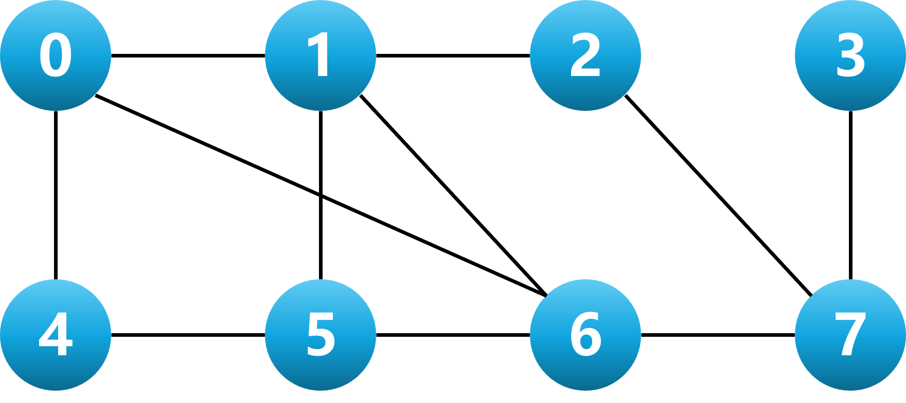
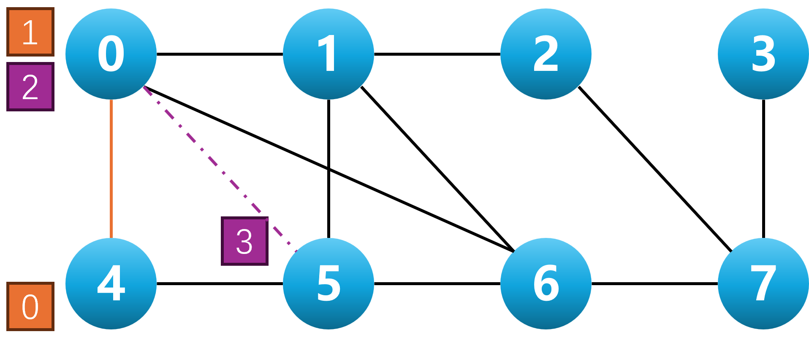

划分——进阶
注意：进阶要求是面向大作业的，同学们选择划分作为大作业内容时，可以选择完成以下提到的要求。
注意：连同代码和论文一起提交，并且写一个简要的README文件，说明如何复现你的实验结果。
在这个实验中，你需要优化你的划分(partition)算法。
完成的需求越多，你的大作业成绩也会越高。
以下需求是一个层层递进的关系（除了并行化）。只完成第三个需求，也足够拿到大作业的所有分数。
1. 并行化你的划分算法
改造实验一中实现的算法，使得它适应多线程计算。
在大作业论文中，你需要说明你的并行化思路，以及并行化的加速比。
注意，算法稳定性是重要衡量指标，要求固定随机数种子的情况下，你的算法输出应该是一致的。
2. 多路划分
改造实验一中的算法，使得它适应多路划分。例如三路划分，你的算法能把网表划分成三个不同的部分，使得整体的割代价最小。
在大作业论文中，你需要简要说明你的算法思路。
- (可选)你的程序允许设置划分均衡的参数，其中是划分的数量，要求每个划分，被分配的元件数量占全部元件数量的比例不小于。
- 你需要特别注意当时，你的程序不能崩溃或无法完成任务。
- 如果总元件数量不可以被整除，允许节点之间的元件数量相差1（例如，但是元件总数量为奇数个）。
3. 拓扑约束
给定一个网表和划分的目标对象，你需要最小化多个划分之间的割代价，同时尽可能保证多个划分的平衡。
你的划分需要考虑节点之间的拓扑约束信息，划分结果不能违反拓扑约束，你可以在附录的拓扑约束一节找到拓扑约束的相关说明。
输入文件说明
数据集下载链接：校内链接(ICCAD2021-TopoPart-Benchmarks.zip)和校外链接(Google Drive)。
ICCAD2021-TopoPart-Benchmarks.zip包含三个文件，文件FPGA Graph.zip是划分的拓扑信息，Generated Benchmarks.zip和Titan23 Benchmarks.zip是网表相关信息。
拓扑划分
打开文件MSF1你将会见到的划分拓扑信息如下：
8 11
0 1
0 4
0 6
1 2
1 5
1 6
2 7
3 7
4 5
5 6
6 7- 第一行两个数字分别代表拓扑图的节点数和边数。例如这个图有8个节点，11条边。
- 接下来的每一行代表一条边，每一行两个数字代表这条边的两个端点编号。例如这张图的边有11条，文件有11行。
如果我们把以上信息画成图，我们可以得到以下的结果：

网表相关信息
打开Generated Benchmark.zip的case1你将会见到的网表相关信息如下：
300000
749091
212496 250542
85805 88841
4047 221825
99901 129256
215074 8529
200758 78824
128700 186666
276356 131687
...
# 从749093行开始
3847 67234 98456
12345 67890
...- 第一行一个数字代表网表的节点数。例如这个图有300000个节点。
- 第二行一个数字代表网表的边数。例如这个图有749091条边。
- 接下来的每一行代表一条边，每一行两个数字代表这条边的两个端点编号。例如这张图的边有749091条，除去最开始的两行，文件还有749091行。
- 从749093行开始，每一行代表代表固定节点的信息。第一行有三个数字，分别代表3847、67234、98456三个元件固定在拓朴图的节点0上。第二行有两个数字，分别代表12345、67890两个元件固定在拓朴图的节点1上。
注意：生成测试数据集时使用MFS2的拓朴图，如果要迁移到MFS1上，你需要忽略倒数35行的数据。
你必须先实现多路划分，才能实现拓扑约束。
4. 固定约束
以MSF1的拓朴图为例。假设元件1和元件2被固定在节点0上，那么你的算法输出时，元件1和元件2必须被划分到节点0上。
附录
介绍一些基本背景和知识点，方便同学们更好地理解本课题，减少同学们的学习成本。
拓扑约束说明
以MSF1的拓朴图为例。假设元件0和元件1相连、元件2和元件3相连。且划分算法把他们按照以下示例图所示的位置进行划分。

此时元件1和元件0被划分到节点0和节点4，而节点0和4之间存在直接连接的关系，我们称元件0和元件1是满足拓扑约束的。
相反，元件2和元件3被划分到节点0和节点5，而节点0和5之间不存在直接连接的关系，我们称元件2和元件3是不满足拓扑约束的。
baseline
最优解取自论文《TopoPart: a Multi-level Topology-Driven Partitioning Framework for Multi-FPGA Systems》。
离baseline越近，对于你的大作业成绩是有好处的。
MFS1的最优解，使用Titan23数据集。
| 基准测试数据 | 节点数量(node) | 线网数量(net) | 割代价 | 用时(s) |
|---|---|---|---|---|
| spareT1_core | 91976 | 411095 | 54841 | 86.342 |
| neuron | 92290 | 327876 | 8815 | 23.692 |
| stereo_vision | 94059 | 287174 | 32068 | 55.616 |
| des90 | 111221 | 631452 | 87211 | 126.112 |
| SLAM_spheric | 113115 | 495472 | 54402 | 90.432 |
| cholesky_mc | 113250 | 477730 | 37658 | 51.957 |
| segmentation | 138295 | 622376 | 34092 | 48.945 |
| bitonic_mesh | 192064 | 1129440 | 184894 | 149.847 |
| dart | 202354 | 909795 | 168197 | 251.163 |
| openCV | 217443 | 989365 | 120428 | 117.595 |
| stap_qrd | 240240 | 970335 | 134256 | 296.304 |
| minres | 261359 | 988482 | 96178 | 145.168 |
| cholesky_bdti | 266422 | 1067463 | 75479 | 110.059 |
| denoise | 275638 | 1253869 | 93464 | 115.618 |
| sparcT2_core | 300109 | 1313186 | 98128 | 185.788 |
| gsm_switch | 493260 | 2204961 | 267424 | 471.599 |
| mes_noc | 547544 | 2609889 | 297140 | 372.403 |
| LU_Network | 574369 | 2327102 | 52508 | 407.184 |
| LU230 | 635456 | 2604888 | 134877 | 261.887 |
| sparcT1_chip2 | 820886 | 3210647 | 207814 | 517.124 |
| directrf | 931275 | 3437764 | 113493 | 248.817 |
| bitcoin_miner | 1089284 | 3109046 | 413566 | 1231.155 |
MFS2的最优解，使用Generated数据集。
| 基准测试数据 | 节点数量(node) | 线网数量(net) | 割代价 | 用时(s) |
|---|---|---|---|---|
| case1 | 300000 | 749091 | 149065 | 209.55 |
| case2 | 400000 | 998902 | 162611 | 254.55 |
| case3 | 500000 | 1247856 | 139118 | 300.45 |
| case4 | 600000 | 1498396 | 350546 | 419.71 |
| case5 | 700000 | 1748250 | 177704 | 375.81 |
| case6 | 800000 | 1998061 | 149259 | 402.34 |
| case7 | 900000 | 2247701 | 304398 | 551.28 |
| case8 | 1000000 | 2497555 | 270777 | 550.91 |